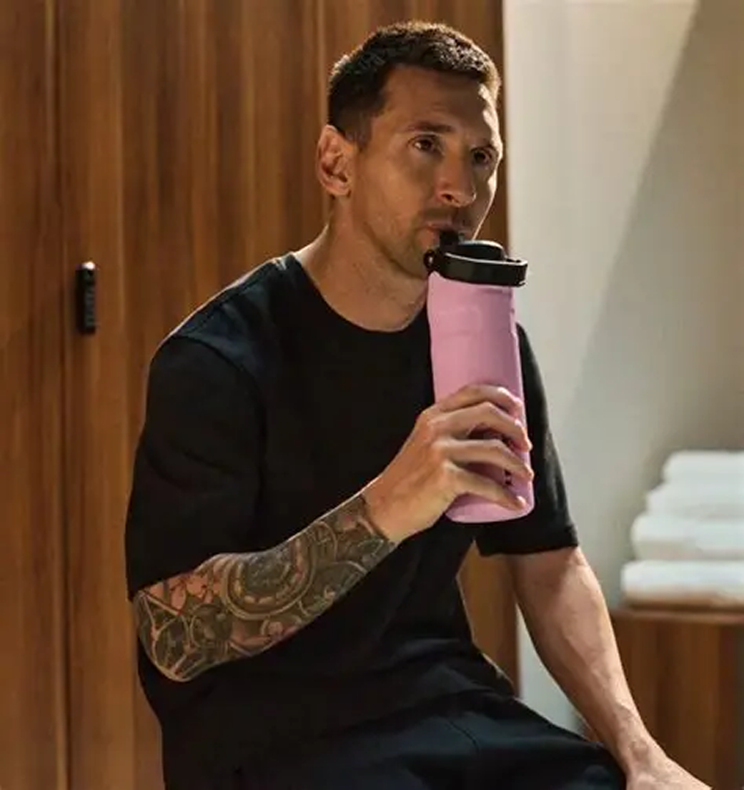
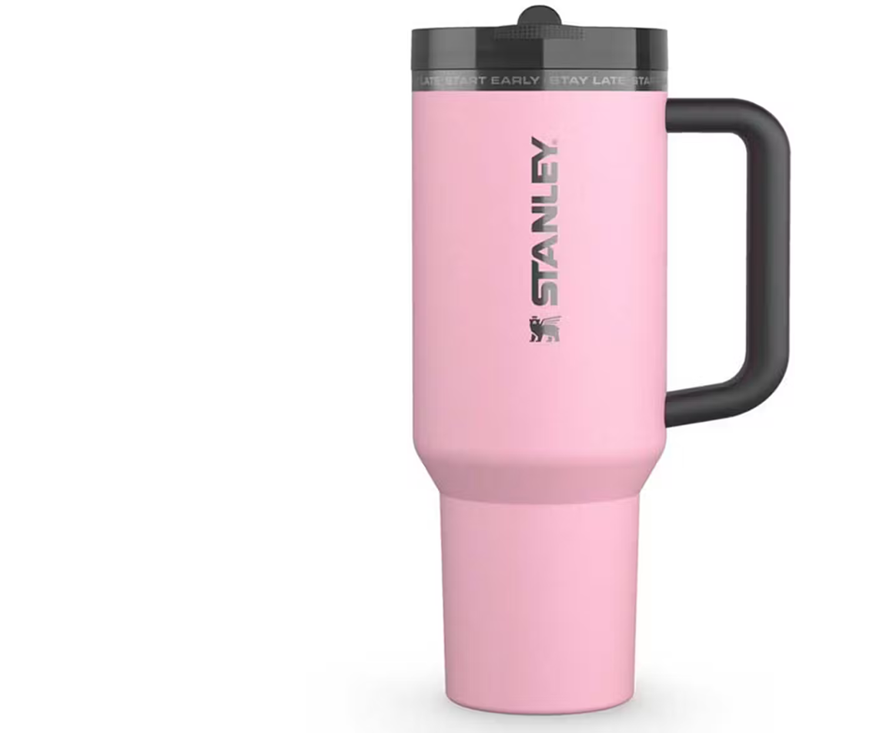
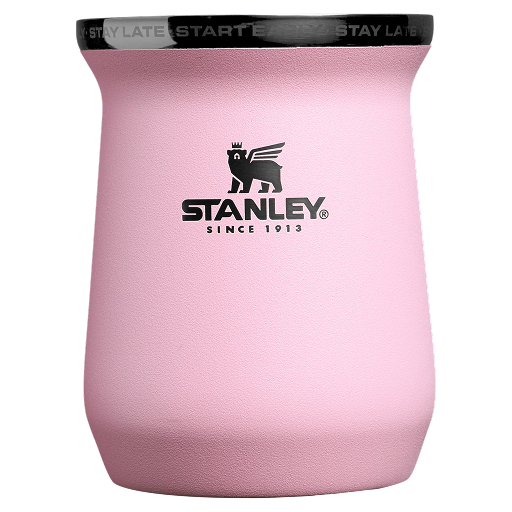
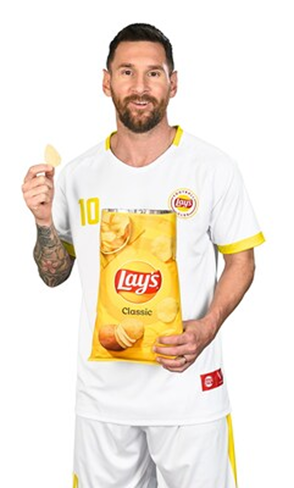
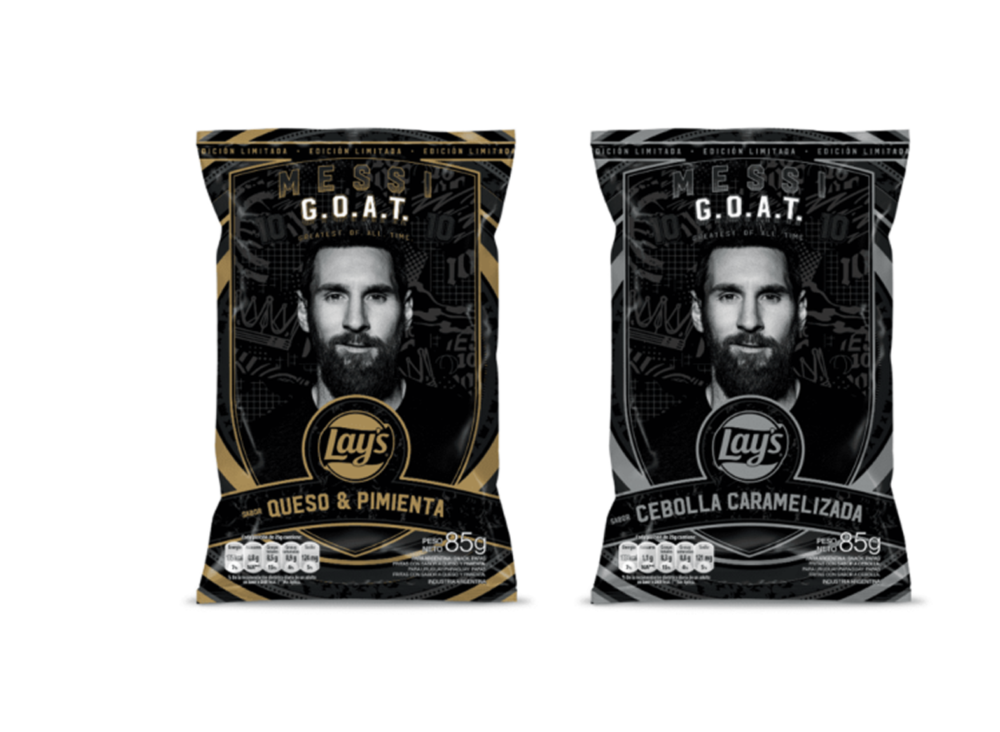
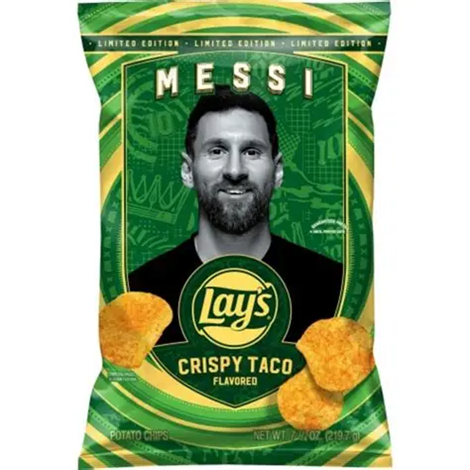
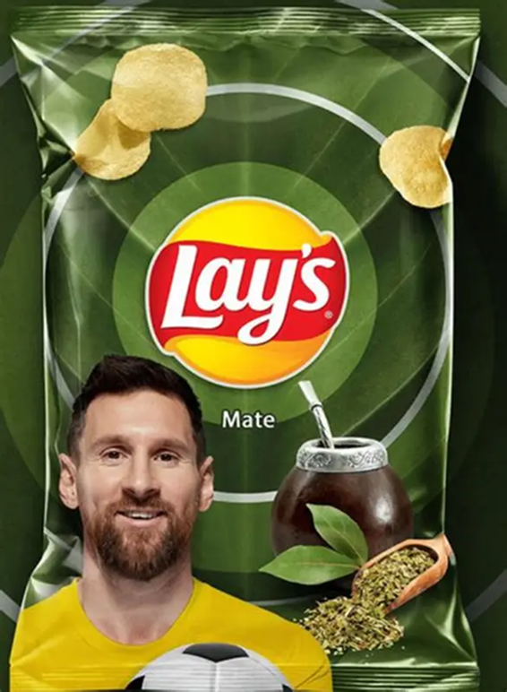

STANLEY
La colección "Messi x Stanley 1913" incluye una variedad de productos diseñados para la hidratación y el deporte,como el Vaso Quencher ProTour,el Mate System y una bombilla.Esta colección no solo celebra la conexion de messi con sus cosas argentinas, sino que también refleja la dedicación de Stanley por crear artículos que favorezcan rl alto rendimiento y la vda diaria.La colección incluye productos como el Vaso Quencher ProTour Flip Straw Tumbler,el Mate System,el Mate Clásico,y una bombilla con extremo en forma de cuchara.La colección "Messi GOAT Pink"destaca por su estilo y por su funcionalidad,inspirada en la figura del astro del fútbol.
  LAY´S
La colaboración entre Lionel Messi y Lay's ha dado lugar a ediciones especiales de papas fritas que celebran la carrera y los logros del futbolista argentino. Estas ediciones suelen presentar empaques personalizados con la imagen de Messi y mensajes que resaltan su impacto en el mundo del fútbol. Además, Lay's ha lanzado campañas publicitarias protagonizadas por Messi, aprovechando su popularidad para promocionar la marca a nivel global. La asociación entre Messi y Lay's no solo ha fortalecido la presencia de la marca en el mercado, sino que también ha creado una conexión emocional con los fanáticos del fútbol que admiran al jugador.
   